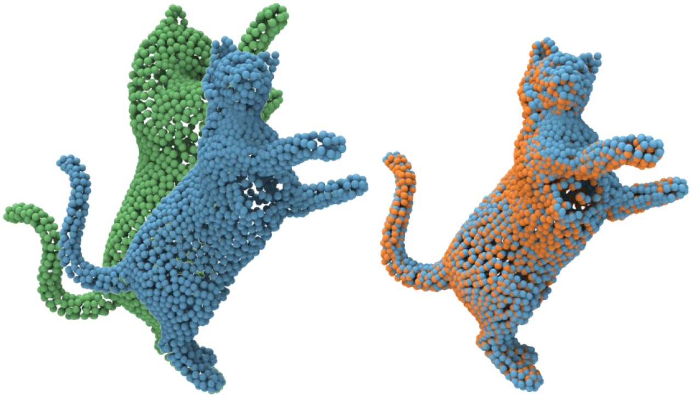

|
I am a Ph.D. candidate in the Graphics&Geometric Computing Laboratory (GCL)
at University of Science and Technology of China (USTC), supervised by Prof. Juyong Zhang.
Before that, I obtained my B.Sc degree from South China University of Technology (SCUT) in 2019.
Google Scholar / Github / LinkedIn / 知乎 / CV |
{kind=link}
|
My research interests include some sub-fields of Computer Vision and Computer Graphics:
|
[2022.03] One paper accepted by CVPR 2022. [2021.05] I will start my Ph.D. journey in September 2021. Bless me! [2021.04] Give a talk at CVM 2021. [2021.03] One paper accepted by CVPR 2021. |
Conference Papers
 |
In this paper, we propose Neural Points, a novel point cloud representation. Different from traditional point cloud representation, each point in Neural Points represents a local continuous geometric shape via neural fields. Therefore, Neural Points can express more complex geometry shapes. |
 |
For non-rigid registration, we propose RMA-Net to deform the input surface shape stage by stage. RMA-Net is trained in an unsupervised manner via our proposed multi-view 2D projection loss. |
Journal Papers
 |
To the best of our knowledge, this is the first work for automatic landmark detection and 3D face reconstruction for general caricatures. |
We take the video stream from a single RGB camera as input, and generates a video stream that emulates the view from a virtual camera at a designated location. |
|
Hongrui Cai 2020 code Design a landmark-driven Facial Expression Recognition (FER) method without employing any pre-trained model from other tasks. |
Journal Reviewers of IEEE Transactions on Multimedia (TMM), Computers & Graphics (C&G). |
[2021.04] Invited talk about Caricature Face at CVM 2021. |
Excellent Undergraduate Student, by SCUT, 2019. Excellent Undergraduate Thesis Award, by SCUT, 2019. First-Class Academic Scholarships for Postgraduates, by USTC, 2019 - 2021. |
Last update: 2022.03 |